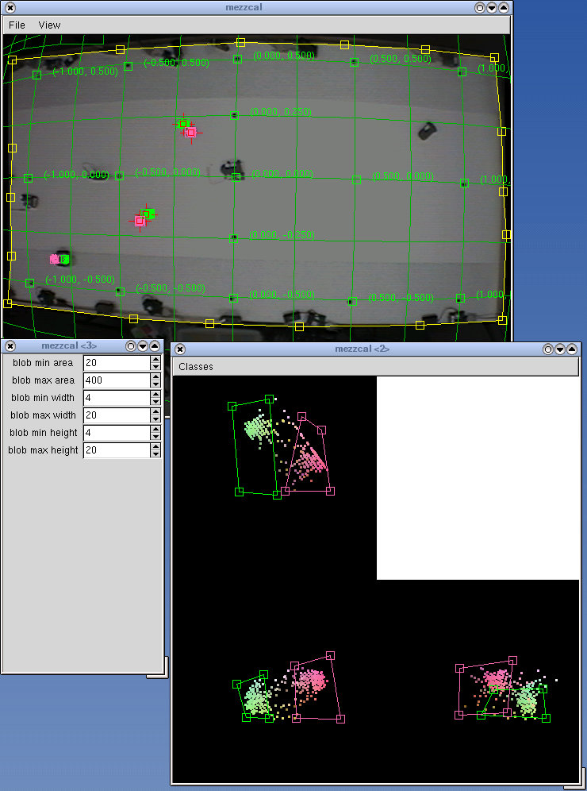

|
| |
| Home | |
| FAQ | |
| Player | |
| Utilities | |
| Stage | |
| Gazebo | |
| Contrib | |
| Documentation | |
| Publications | |
| Contributors | |
| Users |
| Project |
| Download |
| Bugs/Feedback |
| Mailing lists |
| Radish |
| Old news |
| Old stuff |
Mezzanine
An Overhead Visual Object Tracker
Important note: Mezzanine is no longer under active development, and is officially orphaned. Contact me if you are interested in becoming the new maintainer.
Mezzanine is an overhead 2D visual tracking package intended primarily for use as a mobile robot metrology system. It uses a camera to track objects marked with color-coded fiducials, and infers the pose (position and orientation) of these objects in world coordinates. Mezzanine will work with most color cameras (even the really cheap ones), and can correct for the barrel distortion produced by wide-angle-lenses.
Mezzanine is language and architecture neutral: object poses are written into a shared memory-mapped file which other programs can read and make use of as they see fit. Mezzanine itself is written in pure C and was developed under Linux on x86 hardware.
Mezzanine consists of three main components:
- mezzanine : the tracking program.
- mezzcal : a calibration program (for settings colors, etc).
- libmezz : an IPC library for communicating with mezzanine.
mezzanine : the tracking program
mezzanine captures images from a frame-grabber using Video4Linux, classifies and segments the images into colored blobs, groups the blobs into known types of objects, computes the world coordinates of these objects using a ground plane constraint (i.e., all objects are assumed to be either on the ground or at some constant height above the ground), and writes the location of objects into a shared memory-mapped file. Other processes can from read this file using libmezz, or through their own native memory-mapped file API.
On a 700Mhz PIII, mezzanine is able to process 30 frames/second (i.e. the full NTSC frame-rate) while utilising about 70\% of the CPU.
mezzcal : the calibration program
mezzcal is a gui tool used calibrate the system. Users can control the color classes, blob properties, and image-to-world transformation through a simple drag-and-drop interface. mezzcal is witten using RTK2 (a GUI toolkit for robotics applications), which is in turn based on GTK+ (the GIMP Toolkit).
libmezz : the IPC library
The libmezz library provides a convenient C interface to mezzanine. It defines a small set of functions and structures through which client programs written by users can interact with mezzanine. Note that this library is provided mainly for convenience: users are free to write native interfaces to mezzanine in any language they see fit, so long as that language supports access to shared memory-mapped files.
See the Mezzanine User Manual for more details on Mezzanine.
Mezzanine was developed at the USC Robotics Research Lab, and is based partly on code developed for the University of Melbourne's RoboCup Team.